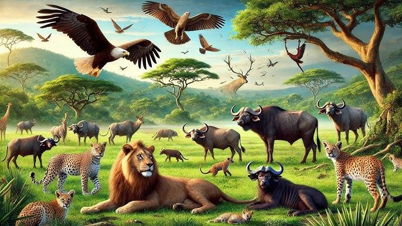
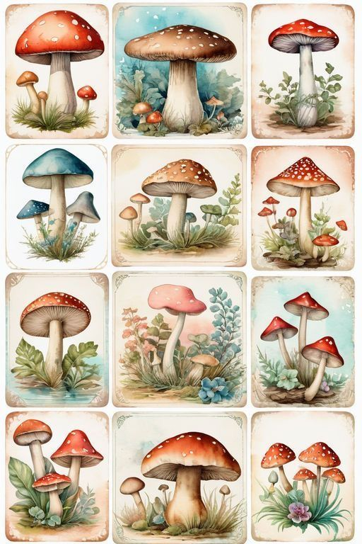
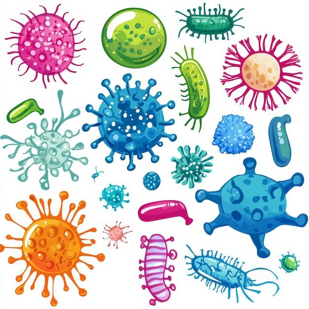
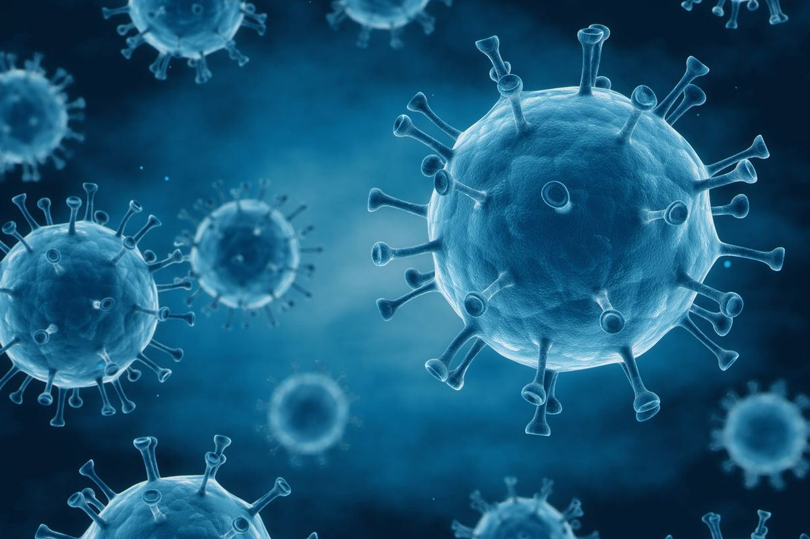

تعريف الكائنات الحية
الكائنات الحية هي المخلوقات التي تنبض بالحياة وتتحرك بنظام دقيق صمّمه الخالق سبحانه وتعالى. فهي تنمو وتكبر مع مرور الوقت، وتتكاثر لتستمر أنواعها على الأرض، وتتنفس لتأخذ الطاقة التي تحتاجها في حياتها اليومية. كما تقوم بعملية الإخراج للتخلص من الفضلات، وتستجيب للمؤثرات من حولها مثل الضوء والحرارة والصوت تتنوع الكائنات الحية على كوكبنا بشكل مذهل، وتشمل النباتات، والحيوانات، والفطريات، والبكتيريا، وكل نوع منها يؤدي دورًا مهمًا في الحفاظ على توازن الطبيعة واستمرار الحياة على الأرض.
تصنيف الكائنات الحية
{kind=link}

{kind=link}

{kind=link}

{kind=link}

{kind=link}
جدول مقارنة
| المجموعة | نوع الخلايا | طريقة التغذية | التكاثر | أمثلة |
|---|---|---|---|---|
| النباتات | حقيقية النواة | ذاتية (بناء ضوئي) | بذور/أبواغ | صنوبر، قمح، سرخس |
| الحيوانات | حقيقية النواة | غير ذاتية | جنسي غالبًا | أسد، طائر، سمكة |
| الفطريات | حقيقية النواة | امتصاص من البيئة | أبواغ غالبًا | خميرة، فطر عش الغراب |
| البكتيريا | بدائية النواة | نافعة/ضارة | انقسام ثنائي | لاكتوباسيلس، سالمونيلا |
| الفيروسات | غير خلوية | طفيلي إجباري | داخل العائل | إنفلونزا، كورونا |